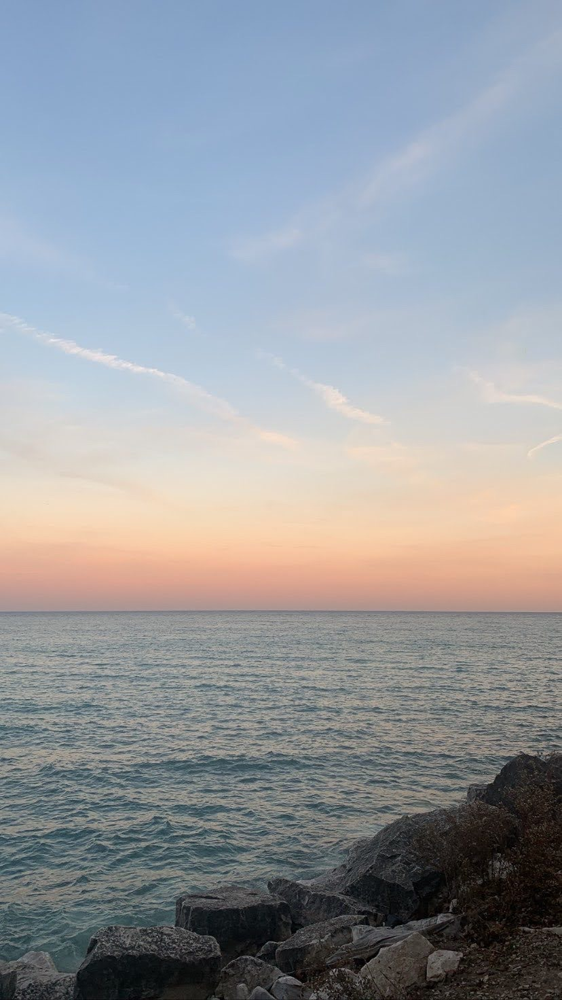
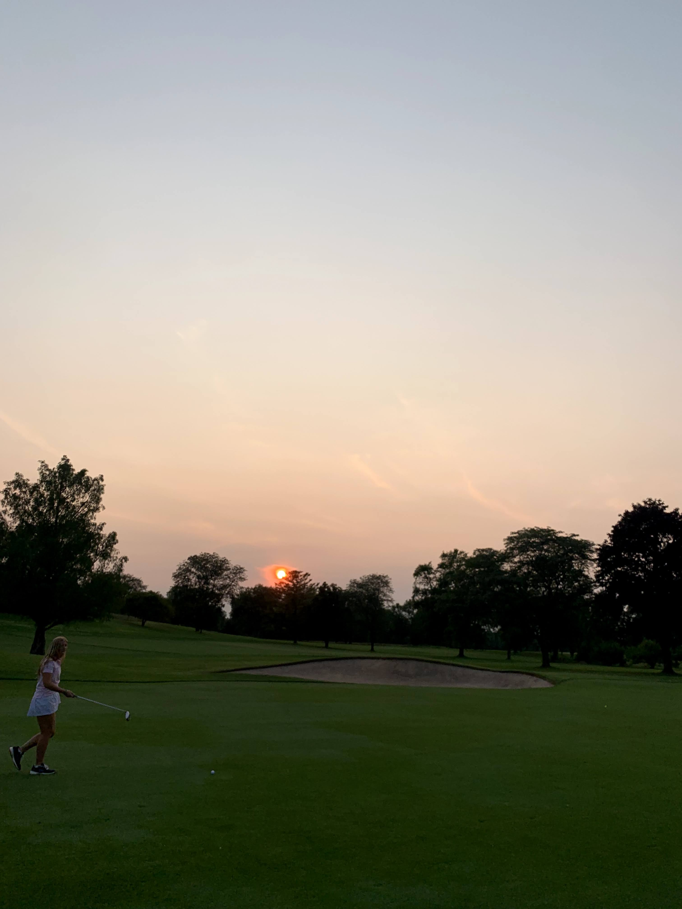
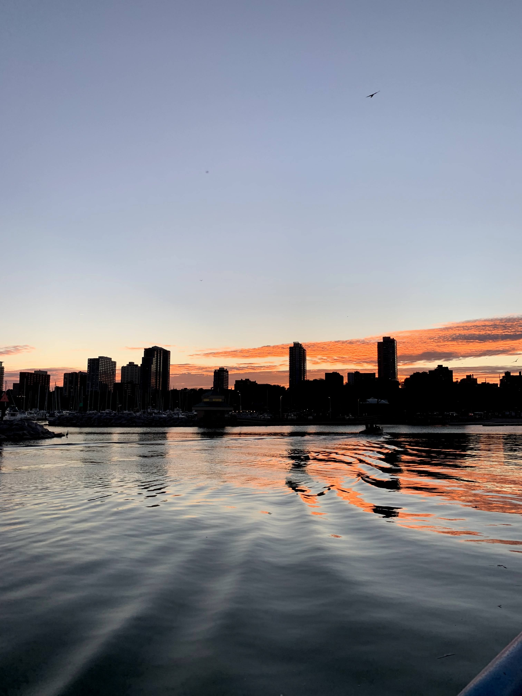

Hi, my name is Katie Hirst and I am sophomore at the University of Wisconsin Madison. One of my favorite things to do is watch the sun set and take pictures of it. Over the past few years I have seen some pretty amazing sunsets and would love to share them. I created three pages to show you my favorite sunsets I have seen in Wisconsin, around the country, and out of the country! Enjoy!
  To give you a better experience of watching a sunset live, click the YouTube link below!